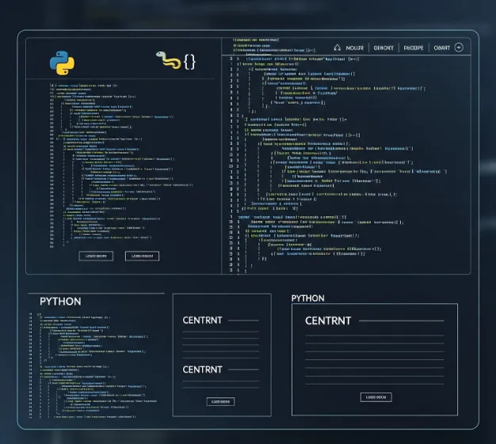
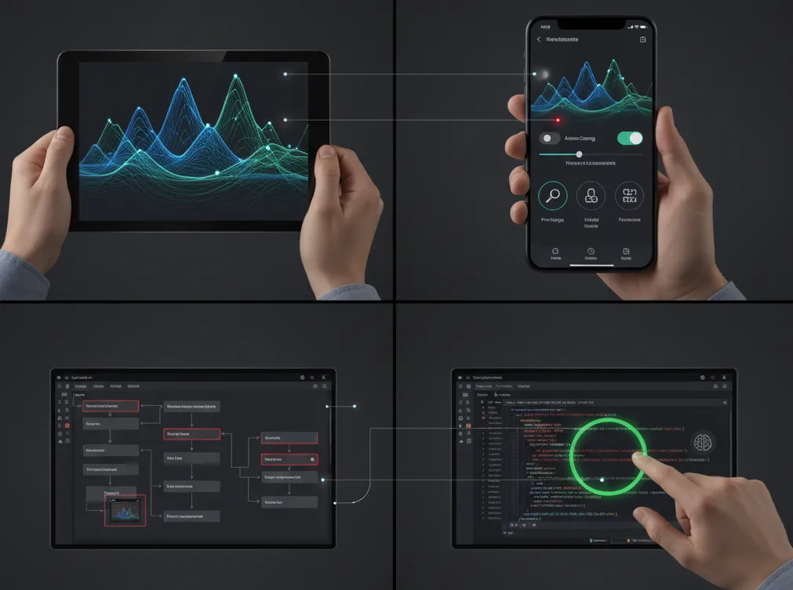

PROJECT CASE STUDY
In-House Image Analysis Tool for Cost Savings
Avoiding significant capital investment. A technical challenge automating traditional visual inspections with Python & AI, transforming quality control methods.
My Role
Development Lead
Key Technologies
Python (Image Proc., Sci Comp, GUI)
Result
Significant Cost Reduction
Project Journey
Challenge
Reliance on traditional methods &
a costly investment proposal
Action
Coded "inspection logic" with AI
& built an in-house tool
Result
Avoided capital investment &
standardized quality criteria
Background & Challenges
Situation: Dependence on Traditional Inspection Methods
Product quality checks relied on visual inspection by experienced workers. Judgments varied based on individual experience and condition, leading to inconsistent standards. The long inspection times were also a production bottleneck. To improve this situation, the company was considering purchasing expensive testing equipment.
Difficulty: AI Judgment Accuracy Issues
The initial algorithm was sensitive to lighting and noise, failing to achieve the expected accuracy. It highlighted the sophisticated judgment capabilities of experienced workers, and some team members suggested that "maybe we do need the specialized machine." The goal of avoiding high costs while ensuring objective quality control seemed difficult to achieve.
Core Idea: Simplifying "Inspection Logic"
We broke down the complex visual inspection into four simple, repeatable steps.
1. Original Image
Image to be inspected
2. Region of Interest
Auto-crop the central area
3. Brightness Data
Convert 2D image to 1D waveform
4. Peak Detection
Count the number of "peaks"
Problem-Solving Process
A Shift in Thinking: The In-House Option
Instead of "buying," we chose to "build." We proposed that with Python's extensive libraries, image analysis was possible without expensive machinery. We selected image processing and scientific computing libraries as core technologies, created a low-cost development plan, and got it approved.
Image Preprocessing: Laying the Foundation for AI Accuracy
Working with the on-site team, we collected images under various conditions. We used image processing libraries to adjust preprocessing steps like noise reduction, contrast enhancement, and binarization. By implementing sensitivity adjustments, we could clearly isolate the analysis target in any environment, solidifying the foundation for accurate analysis.
Algorithm Development: Coding the Inspection Logic
This was the heart of the project. We converted 2D image data into 1D brightness data (a waveform) and used a peak detection algorithm to automatically count the "peaks" and "valleys." We successfully translated the skilled workers' judgment logic into a replicable algorithm.
GUI Development & Deployment: A Tool for the Front Line
Even the best algorithm is useless if it can't be used on the factory floor. We chose a GUI library that makes it easy to create modern UIs, to develop a simple desktop application that even workers unfamiliar with PCs could use intuitively.
Value Delivered
Capital Investment Avoided
Significant Savings
Achieved an equivalent or better quality control system in-house without purchasing expensive equipment. (Specific figures confidential)
Inspection Time Reduced
Drastically
Freed from lengthy visual inspections, productivity improved.
Standardized Evaluation
Unified judgment criteria led to stable quality and contributed to moving away from person-dependent processes.
Takeaways & Replicability
The Importance of Merging Tech and On-Site Knowledge
I think this case provided a chance to learn both the potential and the limits of AI technology. Dialogue with an AI alone couldn't solve the on-site problems. I believe the key to this project's success was the process of collaborating with the factory workers and embedding their expertise into the algorithm. I learned the importance of combining on-hand technology with on-site wisdom before jumping to expensive solutions.
Skills Used
- Python (Image Proc., Sci Comp, GUI Libs)
- Generative AI (Idea Generation)
- Image Processing Algorithms
- GUI Application Development
Replication Points
Redefine the Problem: Shift the problem from "buying an expensive machine" to "building an affordable solution in-house."
Brainstorm with AI: Even with limited programming experience, use dialogue with AI to translate ideas into technical requirements.
Involve the Front Line: Involve on-site staff from the early stages of development and iterate based on their feedback.